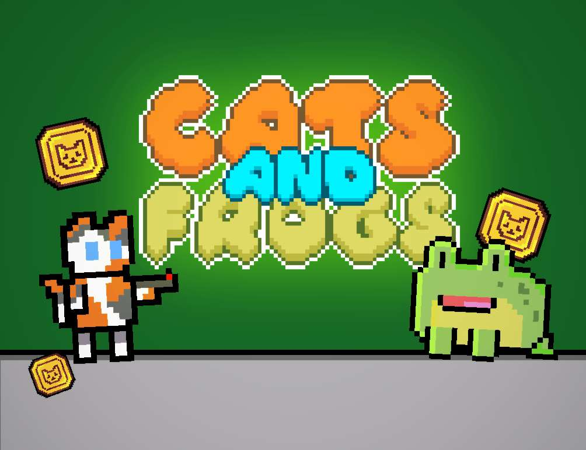

Time Heist - Group VR Game Project
Overview
VR Interactive Game
Date Started: April 2025
My Role: Developer
Software Used: Unity, C#
Download APK (for Meta Quest)
GitHubSection 1 | Introduction
1.1 Brief
This is a Group Game Project made in Year 1, Semester 2.
The goal is to develop a presentable, playable prototype of a game. The brief was as follows:
"Working in groups, create and develop a game that takes advantage of immersive and interactive technologies."
My role in this project was as Developer.
I worked in a team of 3 Developers and 3 Artists/Designers. However we all concepted our project as a group.
1.2 Concept and Inspiration
As a class, we all pitched ideas for the projects, which were voted on, and the top votes were then developed by seperate groups. I had the idea of creating a game that is similar to/inspired by games such as R.E.P.O. and Lethal Company, involving procedurally generated levels which contain loot, and your goal is to collect the highest value of loot.
My idea was highly voted, and after we picked our groups, we had a meeting to solidify our objective and what the game will be.
Group Project 3 – Meeting 1
Key Points: - Testing the team on VR, need a benchmark for motion sickness. - Making the game colorblind friendly: • Protanomaly, based on Dom’s colorblindness. • Then can build off of that and make normal color vision. Gameplay Loop: - Being chased by a monster, collect items of value to hit a quota. - Collect items of value, then solve puzzles to leave. - Timer on each level, collect items of value before the timer runs out. - Backpack system, most items can be stored aside from larger items. - Weight system, carrying too much can slow you down. - Oil lamp for lighting, can be stored on the hip. Design Choices: - Cave-in at pyramid/temple, collect items and leave before cave-in. - Could make stylized Tomb Raider design, more polygonal. - However, could be bad for UX as it can be bad on the eyes. - British Empire setting, grave robbing pyramids for museums. - Easter egg items, pics of devs on different items. Planned Features: - Shop will be added on the 2nd iteration: • Item shop for purchasing backpack slots, speed, maps, etc. Extra Tasks: - Hand textures. - Extra level. - Animated wall insects.
As per this meeting, we developed the core setting and goal for our game: procedurally generated pyramids, where you enter, collect loot, and leave before time runs out and the pyramid collapses.
We then collected both visual references and references for the procedural generation algorithm which I would be developing, some of which are shown below.


The project lead created a Gantt chart to organise what we would be doing for the duration of the project.
1.3 Tools and Software
Unity
Unity is the game engine we chose to use, due to its familiarity and stength of 2D tools and workflow
Discord
Discord is an online instant messaging and group chat application, this is what we used mainly to communicate and share ideas
Section 2 | Programming
1.4 Room Generation
(above shows an older version of the generation, there are some collision issues present)
Before I began programming, I setup a new Unity project, installed all the necessary packages and created a GitHub repository to use as my version control software. This Unity project was completely separate to the main Time Heist project, as I wanted the generator to be available separately on its own (V1 available on my GitHub).
Goal
The goal for the procedural generation is relatively simple: have multiple prefabs for rooms and hallways, which connect together seamlessly to generate an interesting level.
To achieve this, I researched many different procedural generation algorithms, some of which involved pathfinding, and some of which involved randomness.
At the end, I found a video tutorial about a procedural dungeon system in Unreal Engine 5 by REE Animation, which seemed to be a good base for what I needed.
However, our game is developed
in Unity, so I couldn't simply take and re-use the original code, I had to learn how the generation worked, and write my own C# code which worked around these principles.
1.4.1
private static Dictionary occupiedPositions = new Dictionary();
public static void OccupyPosition(Vector2 position, GameObject obj)
{
occupiedPositions[position] = obj;
}
I implemented a persistent currency manager using the singleton pattern to ensure only one instance exists across scenes. This system centralizes coin tracking, automatically updates the UI on value changes, and broadcasts coin balance updates via an event system (OnBalanceUpdated). It includes methods to set, spend, and retrieve the coin count, ensuring clean integration with other systems like the game UI. This approach provides modularity and scalability.
1.5 Reflection
Development of Cats and Frogs ran mostly smoothly. I kept pace with the schedule that I had planned for myself, and achieved the majority of my goals to a reasonable standard. When it came time to present our game, my tutor referred to it as a "medium-fidelity final product"
This shows that we successfully developed a working tower-defense game for Android devices that performs well on real hardware and is a fully playable game. Whilst we achieved what the brief required of us, there are a lot of improvements that could've been made along the way.
Limitations/Failures
As with all development projects, some things didn't go as planned, and are a valuable learning experience.
Being a solo developer entirely eliminates the problem of poor communication, which is a positive. However, it also led to a lot of poor code organisation, as well as rushing some key features. This is in part due to the high workload as the sole developer, but also
due to poor planning of systems and their interactions, due to lack of experience. This led to a lot of technical debt, meaning that it would be unecessarily difficult to expand on this game to completely polish and finish it, as some systems would ideally be completely rewritten and re-thought-out.
The art team were not fully aware of exactly what sprites and images were needed at what time. This led to me having to create some prototype artwork for the UI - this led to a lack of focus and a lack of time - contributing to the somewhat rushed systems. This could have been prevented with better inter-team communication.
A personal failure of mine is that I spent too long working on the drag and drop system. Whilst it is vital to the game, so having a rigid drag and drop system is very important, I could have used an asset from the Unity Asset store instead, and spent more time working
on the bespoke systems, both refining them and creating more in-depth gameplay.
The prototype focused on core mechanics, lacking advanced features such as more varied enemy types/classes or power-ups. UI elements could benefit from enhanced visual feedback and animations.
The majority of the shortcomings of Cats and Frogs boil down to poor planning and poor time management, which is something I need to work on for future projects. It is entirely possible to fix these issues in Cats and Frogs, and allow for it to be expanded into a full-fledged game, by reworking the core systems from the ground up. Despite this, the project reached its goals in the allotted time.
Based on these limitations I think a further 6 weeks of focused development time left would be enough to make everything functional and scalable, as intended. I also think that a further 1-2 weeks on top of that would be necessary if we
want the game to have significant polish.
Areas I need to research include UI and UX design for mobile games, as well as mobile performance optimisation and profiling. This would allow me to design intuitive and engaging interfaces specifically tailored for mobile platforms, and ensure that my games can run
smoothly on even low-end devices, and I can use that knowledge of memory management and efficient rendering techniques in all aspects of gamedev.
Further, I definitely need to research into system planning. Effective system planning ensures that a game's mechanics are not only cohesive and functional, but easier to build on top of and add new features. This would have helped in this project as I would have been able to add all the planned enemy types, such as long-ranged Wizard Frogs, and bosses with special attacks.

1.6 Further Development
Following my reflection, I have outlined a plan that I could follow to rework the game from the ground up:
Sprint 1:
- Strip game down to its core mechanics, preserving best-performing scripts
- Replace Touch Handling with a more optimised premade asset
- Redesign and rewrite grid system for performance
- Rewrite placement system to make more intuitive
Sprint 2:
- Using the new grid and placement, rewrite the shop spawning to be controlled by a single manager
- Rework player and Enemy Controllers
- Rewrite attack system
Sprint 3:
- Polish up previous scripts
- Create all new types of entities
- Polish UI
1.7 Key Tasks & Dependencies
Art: Must be completed before main menu & UI can be polished, before sprite animations can be finalised, and before background elements can be added.
Shop System: Must be entirely reworked before expanding scope, as it is very hard to build upon right now.
Animations: I could not get sprite animations working correctly, this needs to be fixed before the game can be considered polished.
References
[1.2.1] How to Make a Pixel Art Frog (2023). [Art]. Go Real Games, LLC. Retrieved from https://www.megavoxels.com/learn/how-to-make-a-pixel-art-frog/
[1.2.2] Pixel Art Top Down - Basic. [Art]. Cainos. Retrieved from https://cainos.itch.io/pixel-art-top-down-basic/
[1.2.4] This is Pixel Art 32 (2024). [Art]. The_PixelPrysm. Retrieved from https://www.reddit.com/r/PixelArt/comments/1aprcl3/this_is_pixel_art_32/